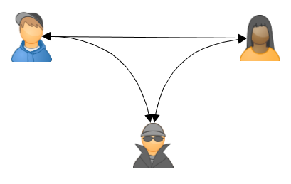
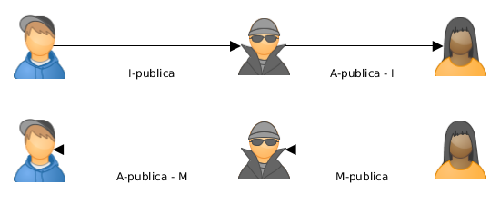

Muy usado en todo tipo de comunicaciones y transacciones
Bloques de 128 bits
Claves de 128, 192 ó 256 bits
8 rondas (claves de 128) , 12 rondas (claves de 192), 14
rondas (claves de 256)
Métodos de cifrado por bloques
Redes 4G:
Usa pares de algoritmos (si uno comprometido, el otro sigue protegiendo)
Sufijo EEA para algoritmos que aseguren la Confidencialidad
Sufijo EIA para algoritmos que aseguren la Integridad
Ataques por fuerza bruta
Siempre encuentra la solución
Consiste en probar todas las claves posibles
Hay que conocer el algoritmo de cifrado y el espacio
de claves
No siempre es posible por su coste temporal
Ataques por fuerza bruta
Espacio de claves:
56 bits: 256 posibilidades
128 bits: 2128 posibilidades
256 bits: 2256 posibilidades
Ataques por fuerza bruta
Tiempo que se tardaría con un superordenador:
56 bits: 0,04 segundos
128 bits: 7.193.522.047 milenios (año arriba, año
abajo)
256 bits: ...
Ataques por fuerza bruta
Se puede hacer un ataque por fuerza menos bruta y
más "inteligente":
Usando un diccionario
Usando datos del dueño de la clave
...
Algoritmos de resumen
Funciones de dispersión (one-way hash)
Generan un criptograma de un determinado tamaño que representa todo el contenido original (Si cambia lo más mínimo, el resumen criptográfico es distinto)
A: número de días sin cambiar la clave (desde 01/01/1970)
B: número de días hasta poder cambiar la clave
C: número máximo de días que se puede estar sin cambiar la clave
Contraseñas en S.O.
Formato Linux:
D: número de días de antelación con el que hay que avisar al usuario de que tiene que cambiar la clave
E: número de días desde que caduque la contraseña hasta que se desactive la cuenta
F: número de días hasta que la cuenta se desactive (desde 01/01/1970)
Criptografía de clave pública
Usa algoritmos de clave asimétrica: la clave que cifra no es la que descifra
Usa dos claves por usuario:
La clave pública que conoce todo el mundo
La clave privada que sólo conoce el usuario
Lo que una clave cifra sólo lo puede descifrar la otra
Criptografía de clave pública
Criptografía de clave pública
Iker tiene su clave privada Iprivada y todos tienen la clave
pública de Iker, Ipública
Miren cifra su mensaje m usando la clave pública de
Iker: c = e ( m , Ipública )
Miren manda el criptograma c a Iker
Iker recibe c
Iker descifra c usando su clave privada I privada: m = d ( c , Iprivada )
Confidencialidad. Sólo Iker puede descifrar el mensaje
Criptografía de clave pública
Ventajas:
Sólo el destinatario puede leer el mensaje
Sólo hay que almacenar una clave
Cualquiera puede usar la clave pública para enviar un
mensaje confidencial a Iker
No son necesarios canales seguros para comunicar la
clave pública
Criptografía de clave pública
Problemas:
La clave privada debe mantenerse privada
Debería ser (prácticamente) imposible sacar la clave
privada a partir de la clave pública
Cifrado y descifrado son más lentos que en los sistemas
de clave secreta
Miren debe estar segura de que está usando la clave
pública de Iker
Debe ser fácil obtener las claves públicas
Criptografía de clave pública
Cada usuario genera su par (clave pública, clave
privada) y publica la clave pública en un servidor de
claves: Key Certification Authority o Key Distribution Center
(KDC)
Criptografía de clave pública
Más problemas:
¿Cómo sabe Iker si el mensaje es realmente de Miren?
Cuando Iker conteste ¿Cómo sabe Miren que el mensaje
es realmente de Iker?
Criptografía de clave pública
Si Iker lo cifra con su clave privada lo puede descifrar
cualquiera (Ipública la conoce todo el mundo)
Solución:
Iker cifra el mensaje con su clave privada: C1 = e ( m, Iprivada )
Luego lo vuelve a cifrar con la clave pública de Miren: C2 = e ( C1 , M pública )
Criptografía de clave pública
Sólo Miren puede desencriptarlo con su clave privada:
Confidencialidad: Sólo Miren puede descifrar el mensaje: C1 = d ( C2 , Mprivada )
Autenticidad y No Repudio: Sólo Iker ha podido enviar el mensaje: m = d ( C1, Ipública )
Criptografía de clave pública
¿Qué ocurre si se interpone alguien en las
comunicaciones?
Ataque Man in the middle:
Un intermediario recibe todos los mensajes sin que las
otras partes se enteren
Se necesita interceptar todas las comunicaciones entre
las dos partes
Criptografía de clave pública

Criptografía de clave pública
Cuando Iker y Miren quieren comenzar a comunicarse
de manera secreta, se intercambian las respectivas
claves públicas
Andoni las intercepta y las intercambia por la suya

Criptografía de clave pública
Iker y Miren cifran sus mensajes con la que CREEN la
clave pública del otro y con su clave privada
Andoni intercepta los mensajes, los lee, modifica y
los encripta con su clave privada
Criptografía de clave pública
Criptografía de clave pública
Iker y Miren creen que están comunicándose de
manera segura
Andoni está enterándose de todo y modificándolo a su
antojo
Formas de evitarlo:
Paso de claves en canales "seguros"
Uso de una autoridad que certifique que una clave
pública pertenece a quien dice: Autoridad de Certificación (AC)
Criptografía de clave pública
Cifrado híbrido
Los sistemas de clave secreta son mucho más rápidos
que los de clave pública
Muchas veces se usa una combinación: El sistema de
clave pública se usa para compartir una clave secreta
S que sólo se usa una vez
El sistema de clave secreta usa S para cifrar el
mensaje
Cifrado híbrido
Miren genera una clave secreta S y cifra su mensaje
usándola: cm = e1 (m,S)
Miren cifra S usando la clave pública de Iker
cs = e2 ( S , Ipública )
Miren manda [ cm, cs ] a Iker
Cifrado híbrido
Cifrado híbrido
Iker recibe [ cm , cs ]
Iker descifra S usando su clave privada Iprivada: d2 ( cs , Iprivada ) = S
Iker descifra m usando S: d1 ( cm , S ) = m
Cifrado híbrido
Firma digital
Miren le manda un mensaje a Iker usando un sistema
de clave pública
Nadie puede leer el mensaje de Miren a Iker pero
cualquiera podría haberlo mandado
¿Cómo sabe Iker que se lo ha mandado Miren o que
nadie lo ha modificado?
Solución: Miren firma sus mensajes
Firma digital
Sólo el usuario legítimo puede firmar su documento
Nadie podrá falsificar una firma
Cualquiera puede verificar una firma digital
Firma digital
No se puede reutilizar una firma
No se puede modificar una firma
No se puede negar haber firmado un documento
No se puede alterar un documento después de haberlo
firmado
Logramos Autenticidad, Integridad y No repudio
Firma digital
Miren obtiene un resumen criptográfico del mensaje: RC = hash (m)
Miren cifra el resumen criptográfico con su clave: Firma = e ( RC, Mprivada )
Miren envía el mensaje (cifrado o sin cifrar) y su Firma
Firma digital
Firma digital
Iker desencripta la Firma usando la clave pública de Miren: RC = ( Firma, Mpública)
Iker obtiene el resumen criptográfico del mensaje: RC’ = hash (m)
Iker compara RC’ con RC para asegurarse que no ha sido modificado
Firma digital
Firma digital
Si además de firmarlo, Miren encripta su mensaje sólo Iker podrá leerlo: Se logra Confidencialidad, Autenticidad,
Integridad y No Repudio
Puede hacerlo usando:
Un sistema de criptografía asimétrica
Un sistema de criptografía híbrido
Firma digital
Un sistema de criptografía asimétrica. Enviaría a Iker:
Criptograma del mensaje cifrado con Mprivada y con Ipública
Su Firma digital (el resumen criptográfico cifrado con
Mprivada )
Firma digital
Un sistema de criptografía híbrido. Enviaría a Iker:
Criptograma del mensaje cifrado con la clave de sesión
Criptograma con la clave de sesión cifrada con Ipública
Su Firma digital (el resumen criptográfico cifrado con Mprivada)
Algoritmos de clave pública
Diffie-Hellman - 1976
RSA - 1977
ElGamal - 1984
DSA - 1991
Curvas elípticas - 1985
Algoritmos de clave pública
Algoritmos de clave pública
Algoritmos de clave pública
DNI electrónico (DNIe 3.0):
RSA
SHA-1 / SHA-256
TripleDES / AES
Algoritmos de clave pública
PGP:
RSA / DSA
IDEA / TripleDES
Algoritmos de clave pública
SSH:
RSA / DSA
SSL / TLS:
RSA / DSA / Diffie-Hellman
IDEA / DES / TripleDES /AES
Confianza de firmas
Aunque utilicemos firmas digitales:
¿Cómo sabemos que la firma es de quien dice ser?
¿Cómo nos asegura una autoridad de certificación que
una firma es de quien dice ser?
¿No podemos fiarnos de una firma que no esté avalada
por una autoridad de certificación?
Confianza de firmas
Se usa en PGP, GnuPG y similares
Un usuario certifica (firmando con su clave privada)
que la clave pública de otro usuario es de confianza
La confianza se propaga según la confianza que
demos a los usuarios que firmen las claves
Niveles de confianza
Desconocido: no nos fiamos de nada que firme ese
usuario (por desconocimiento)
Ninguno: no nos fiamos de nada que firme ese usuario
(porque sabemos que lo hace mal)
Marginal: nos fiamos de las claves firmadas por dos
usuarios con confianza marginal
Absoluto: nos fiamos de todo lo firmado por ese usuario
Certificados digitales
Un certificado digital consiste en que una entidad “de
confianza” firme mediante su clave privada, la clave
pública de un usuario
Sirve para certificar que el usuario es quien dice ser
Depende de la confianza en la entidad que lo certifica
Certificados digitales
Siguen el estándar X.509
Validez != Confianza
Validez: cumple los requisitos de una firma (caducidad,
etc.)
Confianza: nos podemos fiar de esa firma
Una firma puede ser válida, pero no de confianza
Una firma de confianza que no sea válida no tiene
sentido
Certificados digitales
Una autoridad de certificación (AC) certifica la validez
de una firma
Prestadores de Servicios de Certificación (PSC): Ley de Firma Electrónica (Ley 59/2003, LFE), Ley de Acceso Electrónico de los Ciudadanos a los Servicios Públicos (Ley 11/2007, LAESCP)
Los PSCs deben proporcionar un método de consulta de
la vigencia de sus certificados: Sólo las Administraciones Públicas tienen la obligación de
que sea gratuito